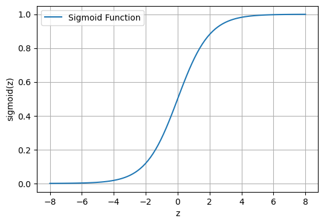
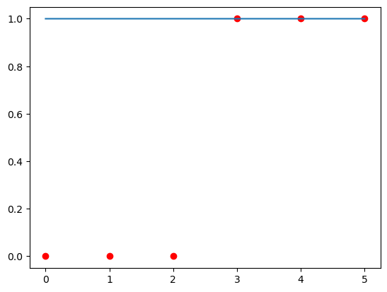
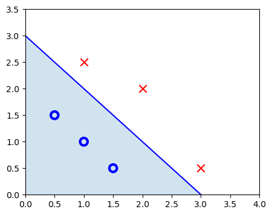
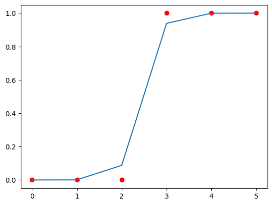
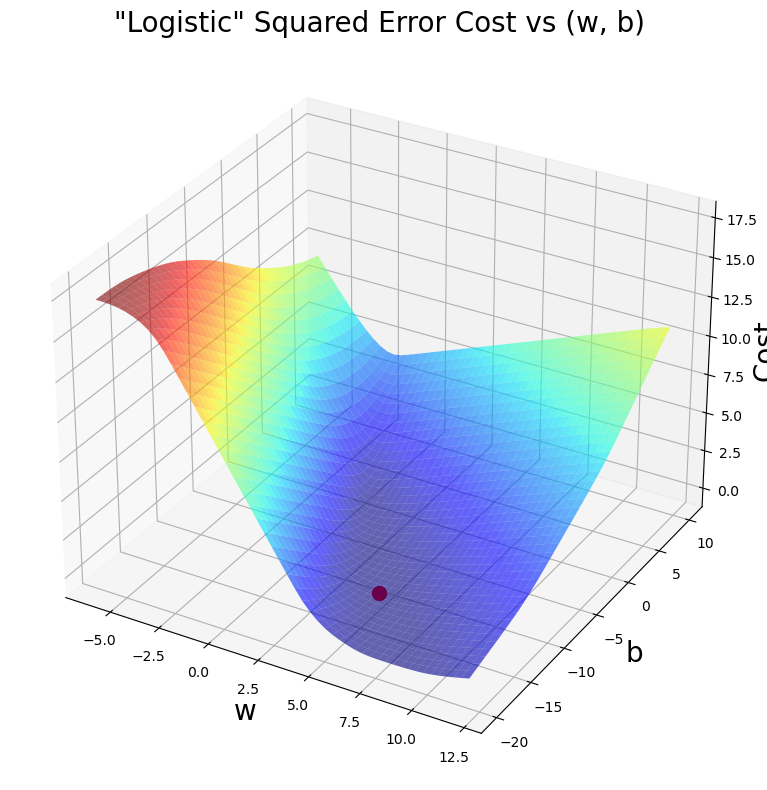

import numpy as np
import matplotlib.pyplot as plt
import math
from matplotlib import cmLogistic Regression
Logistic regression is a statistical tool for understanding the probability of an event occurring based on input variables. It estimates the likelihood using a logistic curve, making it valuable for classification tasks like predicting outcomes or determining categories.
Libraries Required
Some Plotting Functions
def soup_bowl(x_train, y_train, w, b):
wx, by = np.meshgrid(np.linspace(-6, 12, 50),
np.linspace(10, -20, 40))
points = np.c_[wx.ravel(), by.ravel()]
cost = np.zeros(points.shape[0])
for i in range(points.shape[0]):
w_i, b_i = points[i]
cost[i] = cost_fxn(x_train, y_train, w_i, b_i)
cost = cost.reshape(wx.shape)
fig = plt.figure(figsize=(8, 8))
ax = fig.add_subplot(1, 1, 1, projection='3d')
ax.plot_surface(wx, by, cost, alpha=0.6, cmap=cm.jet)
ax.set_xlabel('w', fontsize=20)
ax.set_ylabel('b', fontsize=20)
ax.set_zlabel("Cost", rotation=90, fontsize=20)
ax.set_title('"Logistic" Squared Error Cost vs (w, b)', fontsize=20)
cscat = ax.scatter(w, b, s=100, color='red')
plt.tight_layout()
plt.show()Dataset
x_train = np.array([0, 1, 2, 3, 4, 5]).reshape(-1, 1)
y_train = np.array([0, 0, 0, 1, 1, 1])
w = np.array([5])
b = 10pos = y_train == 1
neg = y_train == 0
plt.figure(figsize=(6, 4))
plt.scatter(x_train[pos], y_train[pos],
marker='x', s=80, c='red', label="y=1")
plt.scatter(x_train[neg], y_train[neg], marker='o',
s=100, label="y=0", facecolors='blue', edgecolors='black', linewidth=1)
plt.ylim(-0.08, 1.1)
plt.ylabel('y', fontsize=12)
plt.xlabel('x', fontsize=12)
plt.legend()
plt.tight_layout()
plt.show()
Sigmoid Fxn
\[g(z) = \frac{1}{1+e^{-z}}\]
def sigmoid(x):
return 1 / (1 + np.exp(-x))
z = np.linspace(-8, 8, 100)
sigmoid_values = sigmoid(z)
plt.figure(figsize=(6, 4))
plt.plot(z, sigmoid_values, label='Sigmoid Function')
plt.xlabel('z')
plt.ylabel('sigmoid(z)')
plt.legend()
plt.grid(True)
plt.show()
Finding Function f_wb
\[ f_{\mathbf{w},b}(\mathbf{x}^{(i)}) = g(\mathbf{w} \cdot \mathbf{x}^{(i)} + b ) \]
def fxn(x, w, b):
f_wb = sigmoid(np.dot(x, w) + b)
return f_wbif len(w) == 1:
fxn1 = fxn(x_train, w, b)
plt.scatter(x_train, y_train, color="red")
plt.plot(x_train, fxn1)
plt.show()
Decision Boundary
\[\mathbf{w} \cdot \mathbf{x} = w_0 x_0 + w_1 x_1 = 0\]
Dataset
x_db = np.array([[0.5, 1.5], [1, 1], [1.5, 0.5], [3, 0.5], [2, 2], [1, 2.5]])
y_db = np.array([0, 0, 0, 1, 1, 1]).reshape(-1, 1)x0 = np.arange(0, 6)
x1 = 3 - x0
fig, ax = plt.subplots(1, 1, figsize=(5, 4))
ax.plot(x0, x1, c="b")
ax.axis([0, 4, 0, 3.5])
ax.fill_between(x0, x1, alpha=0.2)
pos = y_db == 1
neg = y_db == 0
pos = pos.reshape(-1,)
neg = neg.reshape(-1,)
plt.scatter(x_db[neg, 0], x_db[neg, 1], marker='o', s=80,
label="neg_label", facecolors='none', edgecolors="blue", lw=3)
plt.scatter(x_db[pos, 0], x_db[pos, 1], marker='x',
s=80, c='red', label="pos_label")
plt.show()
plt.show()
Loss Fxn
\[ loss(f_{\mathbf{w},b}(\mathbf{x}^{(i)}), y^{(i)}) = \begin{cases} - \log\left(f_{\mathbf{w},b}\left( \mathbf{x}^{(i)} \right) \right) & \text{if $y^{(i)}=1$}\\ - \log \left( 1 - f_{\mathbf{w},b}\left( \mathbf{x}^{(i)} \right) \right) & \text{if $y^{(i)}=0$} \end{cases} \]
\[= -y^{(i)} \log\left(f_{\mathbf{w},b}\left( \mathbf{x}^{(i)} \right) \right) - \left( 1 - y^{(i)}\right) \log \left( 1 - f_{\mathbf{w},b}\left( \mathbf{x}^{(i)} \right) \right)\]
def loss(x, y, w, b):
a = fxn(x, w, b)
epsilon = 1e-15 # Small constant to avoid taking log(0)
loss = -y * math.log(a + epsilon) - (1 - y) * math.log(1 - a + epsilon)
return lossCost Fxn
\[ J(\mathbf{w},b) = \frac{1}{m} \sum_{i=0}^{m-1} \left[ loss(f_{\mathbf{w},b}(\mathbf{x}^{(i)}), y^{(i)}) \right]\]
def cost_fxn(X, y, w, b):
m = X.shape[0]
cost = 0
for i in range(m):
cost += loss(X[i], y[i], w, b)
cost = cost / m
return costSome Plots
soup_bowl(x_train, y_train, w, b)Finding dJ/dw and dJ/db
\[\begin{align*} \frac{\partial J(\mathbf{w},b)}{\partial w_j} &= \frac{1}{m} \sum\limits_{i = 0}^{m-1} (f_{\mathbf{w},b}(\mathbf{x}^{(i)}) - y^{(i)})x_{j}^{(i)} \\ \frac{\partial J(\mathbf{w},b)}{\partial b} &= \frac{1}{m} \sum\limits_{i = 0}^{m-1} (f_{\mathbf{w},b}(\mathbf{x}^{(i)}) - y^{(i)}) \end{align*}\]
def compute_gradient(x, y, w, b):
dj_dw = 0
dj_db = 0
m = x.shape[0]
a = fxn(x, w, b) - y
dj_dw = (np.dot(a, x)) / m
dj_db = np.sum(a) / m
return dj_dw, dj_dbGradient Descent
\[\begin{align*} &\text{repeat until convergence:} \; \lbrace \\ & \; \; \;w_j = w_j - \alpha \frac{\partial J(\mathbf{w},b)}{\partial w_j} \; & \text{for j := 0..n-1} \\ & \; \; \; \; \;b = b - \alpha \frac{\partial J(\mathbf{w},b)}{\partial b} \\ &\rbrace \end{align*}\]
def gradient_descent(x, y, w, b, alpha, num_iters):
J_history = []
p_history = []
for i in range(num_iters+1):
dj_dw, dj_db = compute_gradient(x, y, w, b)
b = b - alpha * dj_db
w = w - alpha * dj_dw
J_history.append(cost_fxn(x, y, w, b))
p_history.append([w, b])
if i % math.ceil(num_iters/10) == 0:
print(f"Iteration {i:4}: Cost {J_history[-1]:0.2e}, w: {w}, b:{b}")
return w, b, J_history, p_history
iterations = 10000
tmp_alpha = 1.0e-1
w_final, b_final, J_hist, p_hist = gradient_descent(
x_train, y_train, w, b, tmp_alpha, iterations)
print(f"(w,b) found by gradient descent: ({w_final},{b_final})")
f_wb = fxn(x_train, w_final, b_final)
print("Cost is", cost_fxn(x_train, y_train, w_final, b_final))Iteration 0: Cost 7.45e+00, w: [4.95000001], b:9.950000761764102
Iteration 1000: Cost 1.32e-01, w: [1.94357846], b:-4.532187811486597
Iteration 2000: Cost 8.42e-02, w: [2.71585819], b:-6.535471646001672
Iteration 3000: Cost 6.46e-02, w: [3.22521954], b:-7.834466336781398
Iteration 4000: Cost 5.30e-02, w: [3.62055449], b:-8.83606124058392
Iteration 5000: Cost 4.51e-02, w: [3.94791911], b:-9.662597001748475
Iteration 6000: Cost 3.92e-02, w: [4.22882495], b:-10.37034842110977
Iteration 7000: Cost 3.48e-02, w: [4.47546538], b:-10.990900553853033
Iteration 8000: Cost 3.12e-02, w: [4.69557844], b:-11.544161480692926
Iteration 9000: Cost 2.83e-02, w: [4.89444965], b:-12.043663029887693
Iteration 10000: Cost 2.59e-02, w: [5.07588043], b:-12.499101969930441
(w,b) found by gradient descent: ([5.07588043],-12.499101969930441)
Cost is 0.025934093960807036Some Plots
if len(w) == 1:
fxn2 = fxn(x_train, w_final, b_final)
plt.scatter(x_train, y_train, color="red")
plt.plot(x_train, fxn2)
plt.show()
soup_bowl(x_train, y_train, w_final, b_final)
Regularized Linear Regression
Finding Cost Fxn
\[J(\mathbf{w},b) = \frac{1}{2m} \sum\limits_{i = 0}^{m-1} (f_{\mathbf{w},b}(\mathbf{x}^{(i)}) - y^{(i)})^2 + \frac{\lambda}{2m} \sum_{j=0}^{n-1} w_j^2 \]
Finding dJ/dw and dJ/db
\[\begin{align*} \frac{\partial J(\mathbf{w},b)}{\partial w_j} &= \frac{1}{m} \sum\limits_{i = 0}^{m-1} (f_{\mathbf{w},b}(\mathbf{x}^{(i)}) - y^{(i)})x_{j}^{(i)} + \frac{\lambda}{m} w_j \\ \frac{\partial J(\mathbf{w},b)}{\partial b} &= \frac{1}{m} \sum\limits_{i = 0}^{m-1} (f_{\mathbf{w},b}(\mathbf{x}^{(i)}) - y^{(i)}) \end{align*}\]